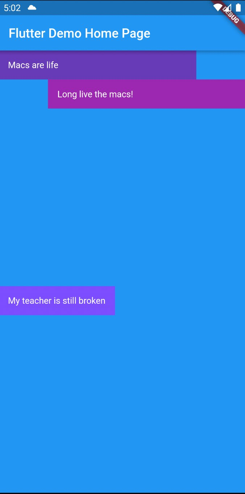
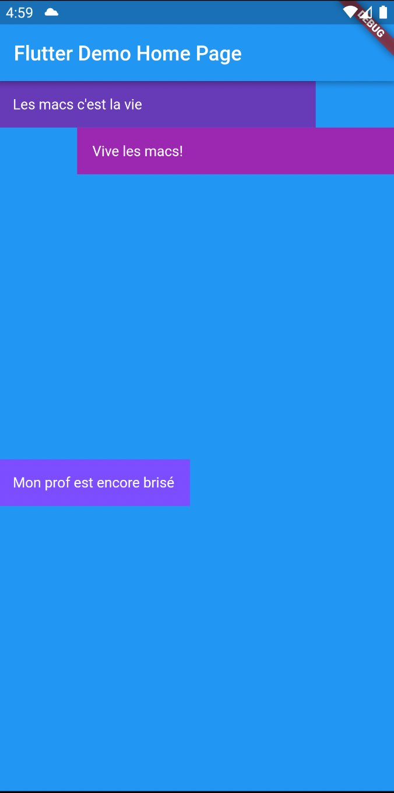

Documentation autorisée:
Tout ce que vous avez produit pendant le cours, ainsi que les repository utilisés et présentés pendant le cours.
Durée:
Vous avez 2 heures pour compléter l'examen. Plus si vous avez le droit
à du temps supplémentaire.
Firestore
Commence par faire une copie du projet de départ
firebase_start_final
et renomme le firestore_nomdefamille.
Le projet est déjà connecté à un projet firebase.
L'initialisation est également déjà intégré.
Vous devez montrer une écriture dans Firestore.
- 1 point
Il faut un bouton au milieu de l'application qui déclenchera l'ajout d'un document dans le firestore.
- 1 point
A l'appui sur le bouton, vous devez créer un document avec
- un champ "firstName" de type String où vous inscrirez votre prénom
- un champ "lastName" de type String où vous inscrirez votre nom de famille
- un champ "creationDate" de type Date avec la date d'aujourd'hui
- un champ "expectedExamScore" de type Number où vous inscrivez la note que vous pensez avoir à l'examen
- 1 point
Vous devez créer le document dans une collection appelée "super-nomdefamille-prenom-infini" en remplaçant
par votre nom de famille et prénom sans accents.
Traduction
Dans un projet séparé des autres exercices, vous devez produire l'interface suivante et implanter la traduction.
- 1 point
La mise en page respecte les copies d'écran. Les espaces en dessus et en dessous du texte central sont égaux. Les Text dans deux lignes du haut font le 4/5 de la largeur de l'écran. Les couleurs exactes ne sont pas importantes mais les 3 Text doivent avoir des couleurs différentes.
- 2 points
Les traductions français et anglais sont telles que vues dans les copies d'écran.


HTTP JSON et erreurs
Commence par télécharger le serveur
server_final
et exécute le.
Dans un projet séparé des autres exercices, vous devez programmer une interface avec 2 champs de saisie et un bouton.
{kind=link}
{kind=link}